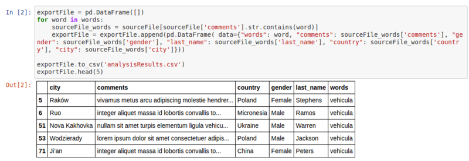

Being able to output an abstract information out of a set of data is a crucial first step. But it is hardly impossible to analyze the data extracted in the previous article without properly visualizing it. And I'm not even talking about communicating your results.
Visualizing your data properly will allow you to dig into it, ask relevant questions, get answers and more importantly, discover additional insights.
But let's be honest, usually we only have access to Excel and its set of diagrams. It can be great for flexibility, but also very limited and painful if you need to setup a recurring process.
In some companies, you may have access to a Business Intelligence tool embedded in your ERP or to a more sophisticated tool like Tableau or Qlik.
In this case I strongly encourage you to start using them.
For those of you who don't have access to such softwares or don't have the necessary authorizations to create the application you need, let's continue using our Jupyter Notebook.
The main advantage of Jupyter is it's flexibility and the ability to share your work with others very easily.
Your notebooks can be saved either locally or on your enterprise network, as long as you have the necessary authorizations to access the shared folder.
Create a shareable notebook
Before sharing anything, let's create a new "Notebook" in Jupyter.
We will first insert the code from our 'semanticAnalysis' program.
The first cell will contain the libraries and source data to be imported:
Compared to our initial program, the following changes have occured:
- A new library named "Brunel" is now imported. Don't worry we'll talk about it in a moment.
- The list of words to be looked for has been increased (randomly generated from Mockaroo).
- The source file "MOCK_DATA.csv" has been enhanced with the addition of a few thousand rows of data and two new columns: 'country' and 'city'.
When running this first cell, we can check that the data are correctly read by the notebook by printing the first 5 rows on the screen.
In a second cell, we can add the rest of our code to generate a dataframe and the file containing the results of our analysis.

The only difference here is the addition of the country and city information for each sales people in our results file.
Run the cell's code and the first 5 rows of your results should be printed in your Notebook.
As you should expect, the 'analysisResults.csv' file has been generated as well.
Visualize your data
Since we have generated the data we need for our analyis, let's dig a little bit into it.
Our goal was initially to find all our database entries containing offensive words in order to clean it before an audit finds out how our sales people consider our prospects or clients.
The first step has given us a list of database entries and their corresponding id and the list of sales people we need to contact to clean it.
We could simply send an email to each person in this list and ask them to modify the incriminated comments. That would be effective as a short term decision but would not solve the problem in the long term.
We need to assess the extent of this issue and eventually plan dedicated training session on ethics where people are not compliant.
Using Brunel, a powerful and yet simple visualization library open-sourced by IBM a few months ago, let's look into our dataset.
Brunel can be installed locally and can be integrated into Jupyter Notebook, so you can stay in your notebook for the whole analysis.
Click here to see how to install it or the different ways to use it.
It could be first interesting to check how our results are distributed worldwide to have a broad idea of how we could prioritize our efforts.
%brunel data('exportFile') bubble color(country) size(words) label(country) sort(words) count(words) legends(none) tooltip(#count)
The output should be:
With our sample dataset (totally randomly generated), we see that a significant number of infrigements to our internal policy have occured in more or less 15 countries.
We should maybe concentrate our efforts on these countries first, but how many people would we need to train ?
So let's just take a look at the first 15 countries and see the number of sales people to train per country:
%brunel data('exportFile') bubble top(words:15) count(words) size(words) label(country) count(last_name) color(country) sort(last_name) tooltip("Sales: ", last_name)

And what if we wanted to see the split per gender in each country to see if there is any significant difference ?
%brunel data('exportFile') bubble color(country) size(words) label(country) sort(words) count(words) legends(none) tooltip(#count) interaction(select) | x(gender) y(#count:root) color(gender) bar transpose tooltip(#count) legends(none) interaction(filter)
Now each time you click on a country you have the difference between males and females.
Finally we could check the names of the sales people who have infringed the rules the most in each country - In this test we may have duplicate names, it is because our dataset contains multiple homonyms.
%brunel data('exportFile') bubble color(country) size(words) label(country) sort(words) count(words) legends(none) tooltip(#count) interaction(select) | x(gender) y(#count:root) color(gender) bar transpose tooltip(#count) legends(none) interaction(filter) | cloud color(city) label(last_name) size(words) count(words) sort(words) legends(none) interaction(filter) style('font-size:200px, font-family:Impact') :: height=800, width=1000
You should now have a small dashboard to help you make you own decision or to communicate internally.
You can find the data used in this article on github if you want to play with it.
Don't hesitate to also share your own visualization or Jupyter Notebooks.